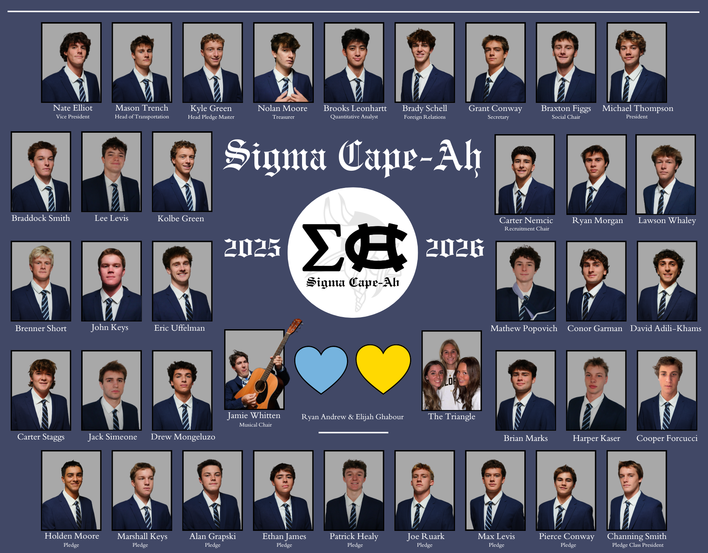
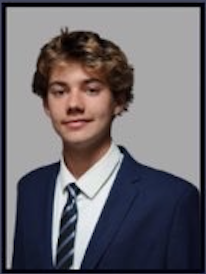
President/ Founder
Mikey Thompson is an outgoing, athletic, and enthusiastic individual. He spends most of his time organizing large events, or competing in school related sports. Mikey is known for his active role as a QB on the football team and a guard on the basketball team. He is liked by all that meet him and is notably great at establishing relationships with new people, making him the perfect candidate for the role of Sigma Cape-Ah president.
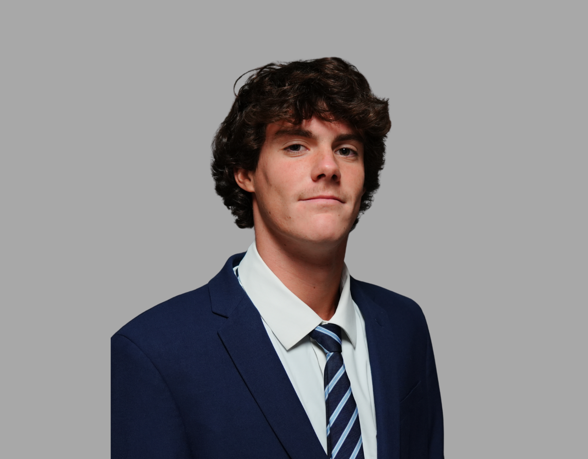
Vice President
Nate Elliot is the man that brings the party. He is a high level professional skim boarder and arguably the loudest and most spirited member of the fraternity. Although he attends Sussex Academy highschool he is a true viking at heart. No other member matches his energy. He spends much of his time at the beach mastering his craft, and the remaining free time he has is spent on encouraging get togethers.
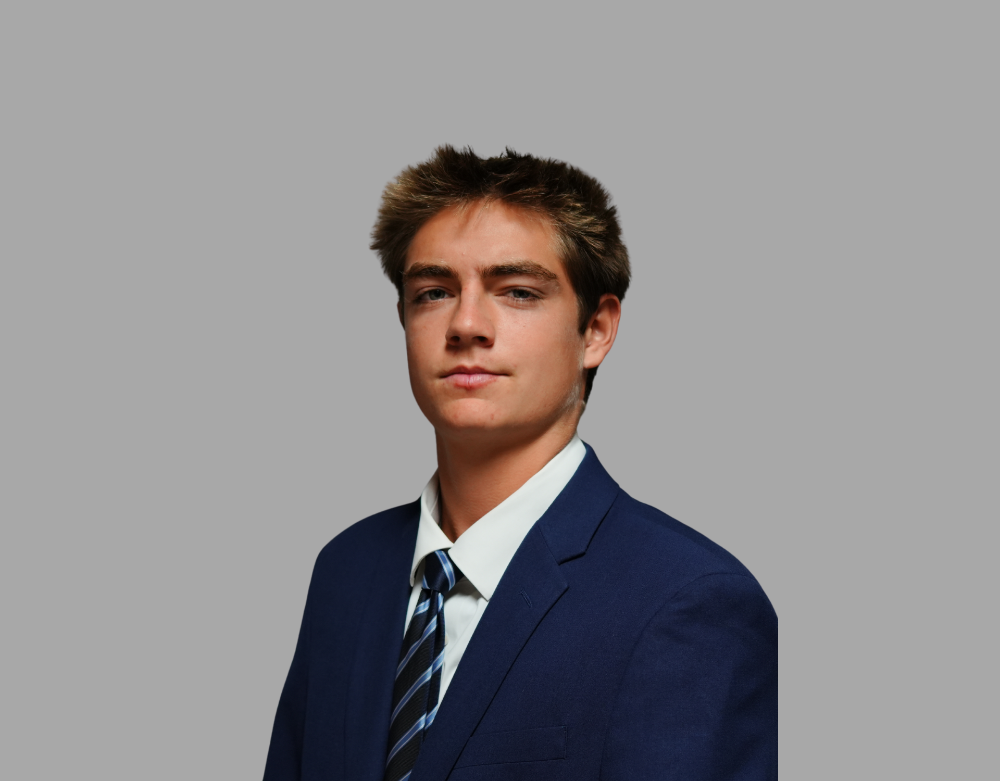
Secretary
Grant Conway is a brother that always reaches for the top. He strives towards a high GPA, staying shifty on the field, and becoming the best individual he possibly can. Although Grant is one of the quieter members of the fraternity he shows his true colors of passion and grit when sorrounded by the people he is close with. Grant is a high level lacrosse player commited to Randolph-Macon as a class of 2030 Yellow Jacket and accurately represents what Sigma Cape-Ah stands for.
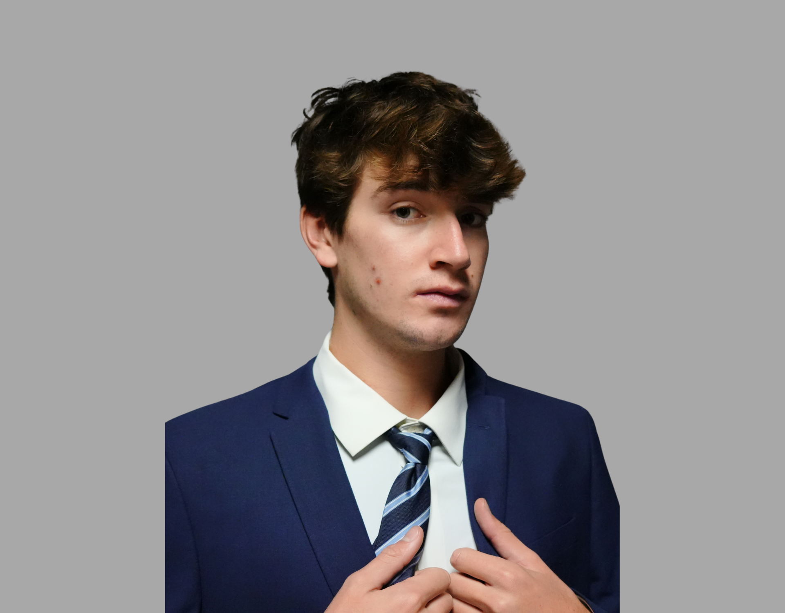
Treasurer
Manager of the Lacrosse Team.
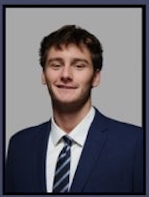
Social Chair
Braxtion Figgs is a man of many connections, he takes lots of time to get to know people and develop a relationship that may benefit both parties int he future. He is great at thinking ahead and taking advantage of the situation he is placed in. He easily finds the good in any situation and uses his great problem solving skills to make the best of everything. He is a highly ranked basketball player and takes initiative in coaching his team on and off the court. With all of his social abilities he is the perfect candidate for the social chair.
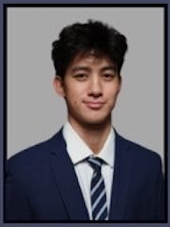
Philanthropy
Brooks Leonhart is the academic core of Sigma Cape-Ah. With a strong SAT score of 1590 he is the glue that keeps the brothers grades together. He is on the quiet side but is an incredibly athletic and smart individual. He thrives in a group enviorment where there is a tangible goal. Being the smartest of the brothers he was reasonably put in charge of philanthropy. He understands finances, movemenet of assets and takes pride in volunteering and community service making him the perfect candidate for head of philanthropy.
Head of Transportation
Mason Trench is the man of many spirits. He carries the pride of being a Cape student everywhere he goes. At games and events he never fails to encourage cheering, dressing up, and intense school spirit. He is also the goalie for the lacrosse team, committed to SUNY Maritime College to play D3 lacrosse. He takes pride in taking control and creating a safe but fun experience making him perfect for the head of transportation position.
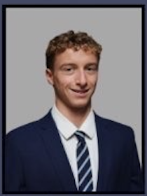
Pledge Master
Kyle Green is a man of multifaceted ability; an accomplished swimmer, a dedicated Dewey Beach Patrol lifeguard, and a committed track athlete. Beyond his physical discipline, he is an exceptionally intelligent individual who approaches both academics and real-world challenges with sharp insight and composure. Kyle carries himself with a quiet confidence, balancing ambition with humility, and consistently demonstrates a strong work ethic in everything he pursues. His charismatic presence and natural ability to connect with others make him not only approachable, but genuinely respected among his peers. Kyle embodies the values of Sigma Cape-Ah through his leadership, character, and well-rounded excellence.
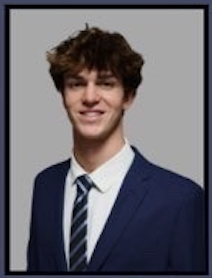
Foreign Relations
Brady Schell is a man of various talents; he is a fantastic swimmer, a stupendously intelligent individual, and great at establishing new relations. He carries himself with confidence in his ability to overcome obstacles and challenges while still remaining humble. Brady is the perfect man for this position being talented in many fields and being able to strike up a conversation with just about anyone, he perfectly represents what Sigma Cape-Ah stands for the in foreign relationships divison.
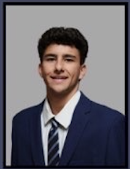
Head of Recruitment
Carter Nemcic is a highly capable and well-rounded individual, distinguished by both his athletic ability and intellectual strength. As a dedicated lacrosse player, he demonstrates discipline, competitiveness, and a strong sense of teamwork, consistently performing with focus and determination. Beyond athletics, Carter is an exceptionally intelligent individual who approaches challenges with clarity and composure, allowing him to excel in both academic and real-world environments. He carries himself with confidence while remaining grounded, and his ability to engage thoughtfully with others reflects both his character and maturity. Carter exemplifies the standards of Sigma Cape-Ah through his work ethic, versatility, and refined sense of leadership.
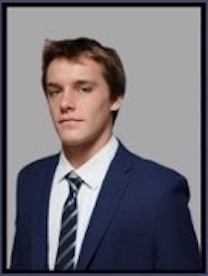
Pledge Class President
Channing Smith is a standout member of the pledge class. Being a top teir athlete Smith carries himself with the utmost confidence and grit. He can be seen spending his time practicing, or putting lots of effort in to continuing his honor roll career through highschool. Channing Smith is a charasmatic individual with undediable pride and passion for everything he is involved in, making him the perfect candidate for the pledge class president.
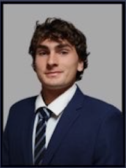
Brother
Conor Garman is an absolute stud of an individual, he braved a viscous dog attack and came out unscathed. Along with Nolan he is an amazing lacrosse team manager, keeping the boys in line and getting the work nobody else wants to do done. As a stud he is also a tank of a drinker, no amount of alcohol can bring this beast down. Conor Garman is undisputedly a great man, and manager. He perfectly represents the values of Sigma Cape-Ah making him the perfect addition to the brotherhood.